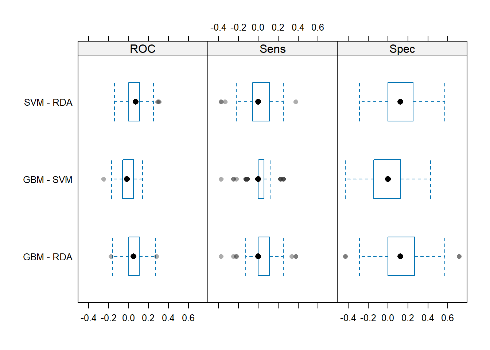

# 使用的数据集
library(mlbench)
data(Sonar)
dim(Sonar)
## [1] 208 61
str(Sonar[, 1:10])# 展示前10列
## 'data.frame': 208 obs. of 10 variables:
## $ V1 : num 0.02 0.0453 0.0262 0.01 0.0762 0.0286 0.0317 0.0519 0.0223 0.0164 ...
## $ V2 : num 0.0371 0.0523 0.0582 0.0171 0.0666 0.0453 0.0956 0.0548 0.0375 0.0173 ...
## $ V3 : num 0.0428 0.0843 0.1099 0.0623 0.0481 ...
## $ V4 : num 0.0207 0.0689 0.1083 0.0205 0.0394 ...
## $ V5 : num 0.0954 0.1183 0.0974 0.0205 0.059 ...
## $ V6 : num 0.0986 0.2583 0.228 0.0368 0.0649 ...
## $ V7 : num 0.154 0.216 0.243 0.11 0.121 ...
## $ V8 : num 0.16 0.348 0.377 0.128 0.247 ...
## $ V9 : num 0.3109 0.3337 0.5598 0.0598 0.3564 ...
## $ V10: num 0.211 0.287 0.619 0.126 0.446 ...41 caret实现多模型比较
该方法基于
caret实现，caret曾经是R语言里做机器学习和预测模型最火爆的R包之一（现在不是了），公众号后台回复caret即可获取caret合集链接，带你全面了解caret。
caret是R里面经典的综合性统计建模R包，目前来看已经落后于mlr3和tidymodels了，但是作为老牌R包，日常使用还是没问题的（速度很慢）。
41.1 数据划分
下面是一个分类数据的演示。这个数据一共208行，61列，其中Class是结果变量，二分类，因子型，其余变量都是预测变量。
划分训练集、测试集：
# 加载R包，划分数据集
library(caret)
# 训练集、测试集划分，比例为0.75
set.seed(998)
inTraining <- createDataPartition(Sonar$Class, p = .75, list = FALSE)
training <- Sonar[inTraining,]
testing <- Sonar[-inTraining,]41.2 建立多个模型
首先建立一个boosted tree模型，并设置好它的超参数范围以及重抽样方法：
# 网格搜索，首先设定超参数范围
gbmGrid <- expand.grid(interaction.depth = c(1, 5, 9),
n.trees = (1:30)*50,
shrinkage = 0.1,
n.minobsinnode = 20)
nrow(gbmGrid)
## [1] 90
head(gbmGrid)
## interaction.depth n.trees shrinkage n.minobsinnode
## 1 1 50 0.1 20
## 2 5 50 0.1 20
## 3 9 50 0.1 20
## 4 1 100 0.1 20
## 5 5 100 0.1 20
## 6 9 100 0.1 20设置boosted tree模型的重抽样方法：
# trainControl函数用来设置非常多的东西，重复10次的10折交叉验证
fitControl <- trainControl(method = "repeatedcv",
number = 10,
repeats = 10,
classProbs = TRUE, # 计算概率
summaryFunction = twoClassSummary # 二分类指标
)选择好之后开始拟合模型（及超参数调优）：
# 选择好之后开始调优
set.seed(825)
gbmFit3 <- train(Class ~ .,
data = training,
method = "gbm",
trControl = fitControl,
verbose = FALSE,
tuneGrid = gbmGrid,
metric = "ROC" # 选择指标
)
gbmFit3
#saveRDS(gbmFit3,file = "./datasets/gbmFit3.rds")上面的例子展示了caret包建模的基本语法，就是一个train()就可以了，method参数选择模型，trControl选择重抽样方法，preProcess选择数据预处理方法（上面这个例子没有进行数据预处理）。
train()函数中的metric参数可以指定调优的指标，默认分类模型是accuracy和Kappa，回归模型是RMSE/R2/MAE。
trainControl()中的summaryFunction参数还提供了额外的调优指标选项，比如上面这个twoClassSummary，内含3种指标：敏感度、特异度、ROC。
然后再建立一个支持向量机模型和正则化的判别分析模型。
# 选择重抽样方法，重复10次的10折交叉验证
fitControl <- trainControl(method = "repeatedcv", #默认是simple boost
number = 10,
repeats = 10,
classProbs = T # 计算概率
)开始拟合模型：
# 支持向量机，高斯径向基核
set.seed(825)
svmFit <- train(Class ~ .,
data = training,
method = "svmRadial",
trControl = fitControl,
preProc = c("center", "scale"),
tuneLength = 8,
metric = "ROC")
# 正则化的判别分析
set.seed(825)
rdaFit <- train(Class ~ .,
data = training,
method = "rda",
trControl = fitControl,
tuneLength = 4,
metric = "ROC")
#save(svmFit, rdaFit,file = "./datasets/svm_rda_fit.rdata")这样我们就建立好了3个模型。
41.3 结果查看
可以单独查看每个模型的结果，直击打印即可：
# 比如查看gbm模型
gbmFit3
Stochastic Gradient Boosting
157 samples
60 predictor
2 classes: 'M', 'R'
No pre-processing
Resampling: Cross-Validated (10 fold, repeated 10 times)
Summary of sample sizes: 141, 142, 141, 142, 141, 142, ...
Resampling results across tuning parameters:
interaction.depth n.trees ROC Sens Spec
1 50 0.8634003 0.8631944 0.6905357
1 100 0.8844097 0.8486111 0.7544643
##省略一部分，太长了
9 1500 0.9181721 0.8805556 0.8039286
Tuning parameter 'shrinkage' was held constant at a value of 0.1
Tuning parameter 'n.minobsinnode' was held constant at a value of 20
ROC was used to select the optimal model using the largest value.
The final values used for the model were n.trees =
1450, interaction.depth = 5, shrinkage = 0.1 and n.minobsinnode = 20.结果没什么难度，我就不帮大家翻译了。
也可以一起放入resamples()函数里面，可以得到每个模型的指标的统计值，比如ROC的最大值、最小值、均值、中位数等：
resamps <- resamples(list(GBM = gbmFit3,
SVM = svmFit,
RDA = rdaFit))
#resamps
summary(resamps)
##
## Call:
## summary.resamples(object = resamps)
##
## Models: GBM, SVM, RDA
## Number of resamples: 100
##
## ROC
## Min. 1st Qu. Median Mean 3rd Qu. Max. NA's
## GBM 0.6964286 0.874504 0.9454365 0.9216468 0.9821429 1 0
## SVM 0.7321429 0.905878 0.9464286 0.9339658 0.9821429 1 0
## RDA 0.5625000 0.812500 0.8750000 0.8698115 0.9392361 1 0
##
## Sens
## Min. 1st Qu. Median Mean 3rd Qu. Max. NA's
## GBM 0.5555556 0.7777778 0.8750000 0.8787500 1 1 0
## SVM 0.5000000 0.7777778 0.8888889 0.8730556 1 1 0
## RDA 0.4444444 0.7777778 0.8750000 0.8604167 1 1 0
##
## Spec
## Min. 1st Qu. Median Mean 3rd Qu. Max. NA's
## GBM 0.4285714 0.7142857 0.8571429 0.8119643 1.0000000 1 0
## SVM 0.4285714 0.7142857 0.8571429 0.8205357 0.9062500 1 0
## RDA 0.1428571 0.5714286 0.7142857 0.6941071 0.8571429 1 0结果就很强！分别给出了3种指标下的每种模型的统计值。
41.4 结果可视化
喜闻乐见的结果可视化也是必不可少的。主要包括以下几种(都是基于lattice的)：
- density plots,
- box-whisker plots,
- scatterplot matrices,
- scatterplots
箱线图:
# 设主题
theme1 <- trellis.par.get()
theme1$plot.symbol$col = rgb(.2, .2, .2, .4)
theme1$plot.symbol$pch = 16
theme1$plot.line$col = rgb(1, 0, 0, .7)
theme1$plot.line$lwd <- 2
# 画图，箱线图
trellis.par.set(theme1)
bwplot(resamps, layout = c(3, 1))密度图:
# 密度图
trellis.par.set(theme1)
densityplot(resamps)换个指标，点线图:
# 换个指标，点线图
trellis.par.set(caretTheme())
dotplot(resamps, metric = "ROC")散点图:
# 散点图
trellis.par.set(theme1)
xyplot(resamps, what = "BlandAltman")散点图矩阵:
# 散点图矩阵
splom(resamps)41.5 显著性检验
除此之外，我们还可以对不同模型之间的差异进行显著性检验，比如t检验，结果会给出多重校正检验（bonferroni法）的p值，非常高大上：
difValues <- diff(resamps)
difValues
##
## Call:
## diff.resamples(x = resamps)
##
## Models: GBM, SVM, RDA
## Metrics: ROC, Sens, Spec
## Number of differences: 3
## p-value adjustment: bonferroni
summary(difValues)
##
## Call:
## summary.diff.resamples(object = difValues)
##
## p-value adjustment: bonferroni
## Upper diagonal: estimates of the difference
## Lower diagonal: p-value for H0: difference = 0
##
## ROC
## GBM SVM RDA
## GBM -0.01232 0.05184
## SVM 0.3408 0.06415
## RDA 5.356e-07 2.638e-10
##
## Sens
## GBM SVM RDA
## GBM 0.005694 0.018333
## SVM 1.0000 0.012639
## RDA 0.4253 1.0000
##
## Spec
## GBM SVM RDA
## GBM -0.008571 0.117857
## SVM 1 0.126429
## RDA 8.230e-07 1.921e-10这个结果展示的是不同模型之间的差异和t检验的p值。比如第一个矩阵（ROC的这个），先横着看，GBM和GBM是一个，不用比，GBM和SVM比，平均ROC的差异是-0.01232，GBM和RDA比，平均ROC的差异是0.05184；再顺着看，GBM和SVM的t检验的p值是0.3408，说明无统计学差异，GBM和RDA的t检验的p值是5.356e-07，有统计学差异。
结果的可视化，使用箱线图，同时展示3种指标，这个图展示的是不同模型之间性能指标的差异分布情况：
trellis.par.set(theme1)
bwplot(difValues, layout = c(3, 1))
下面这个图展示的是不同模型性能指标差异的95%可信区间，如果通过了0，说明没差异，这个图的结果和上面统计检验的结果是相同的：
trellis.par.set(caretTheme())
dotplot(difValues)是不是很强！
这里介绍的caret的内容比较简单，大家如果想认真学习这个R包的话肯定是要下一番功夫的，我在公众号写了非常多相关的推文，可以在公众号后台回复caret获取合集。